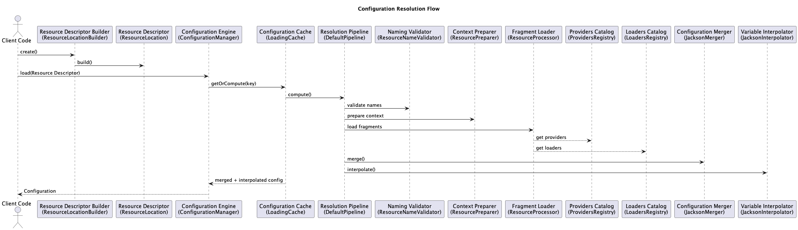

Resolution Flow
This page walks through what happens internally when Liana loads
configuration data, step by step.
The resolution flow is deterministic: given the same inputs,
Liana will always produce the same configuration result.
Example scenario
Assume the following setup:
- Configuration files in the classpath
LIANA_PROFILE=dev- Supported formats enabled by default
Available resources:
application.yaml
application-dev.yaml

Step-by-step resolution
-
Build the resource location
A ResourceLocation is created using defaults or
explicit configuration.
-
Resolve variables
Variables such as ${profile} are resolved from:
environment variables, provided values, or defaults.
-
Generate logical resource names
Liana generates logical names:
applicationapplication-dev
-
Provider resolution
Each logical name is passed to the active
ResourceProvider (classpath by default),
which resolves matching physical files.
-
Loader selection
Based on file extension, a matching
ResourceLoader is selected
(YAML, properties, JSON, or XML).
-
Parse configuration
Each file is parsed into a structured configuration tree.
-
Merge results
Trees are merged in order:
application.yamlapplication-dev.yaml
Later values override earlier ones.
-
Interpolate placeholders
All placeholders are resolved across the full configuration tree,
including nested objects and lists.
-
Freeze configuration
The final configuration becomes immutable and thread-safe.
Resulting behavior
Given the following configuration:
# application.yaml
server:
port: 8080
# application-dev.yaml
server:
port: 9090
The final resolved value will be:
server.port = 9090
Error handling
Liana validates each step of the resolution process.
Invalid resource names, unsupported formats, or unresolved
placeholders can be detected early.
When verbose logging is enabled, Liana reports:
- Which resources were loaded
- Which resources were skipped or missing
- Which providers and loaders were used
Next steps?
Jump to Advanced Usage.